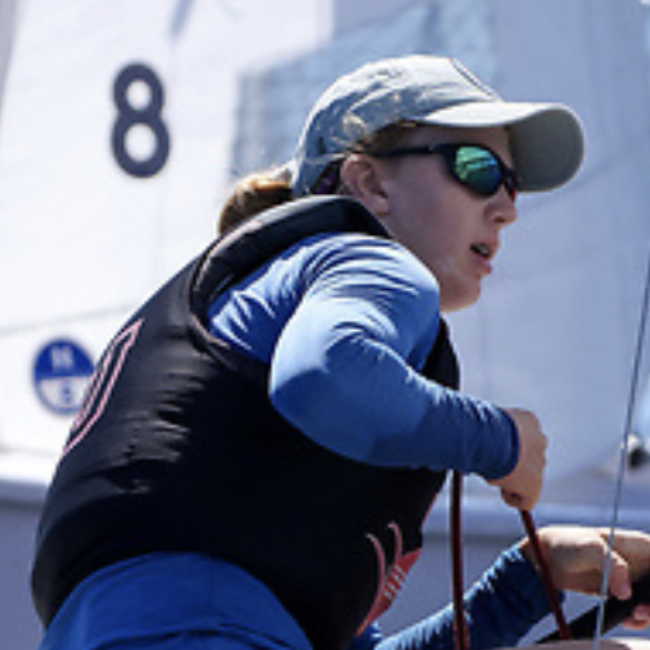
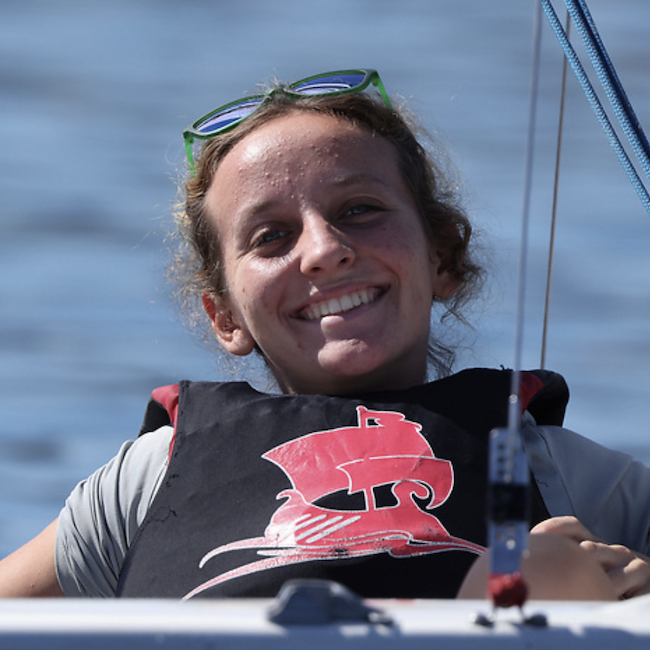
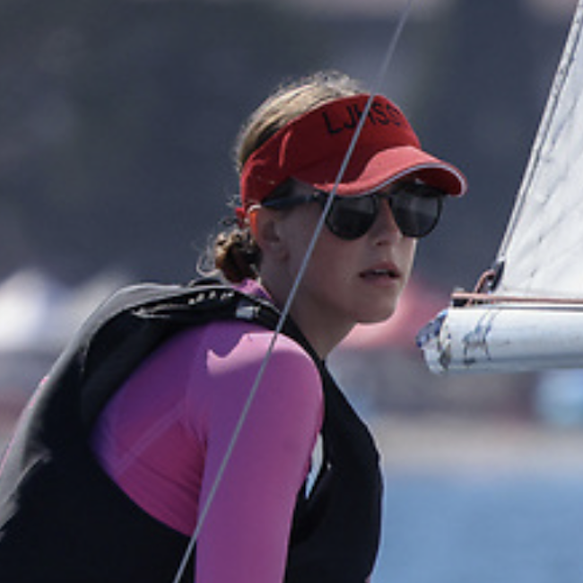
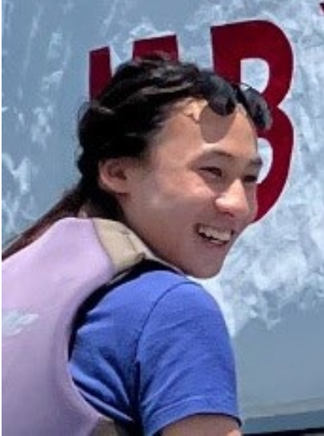
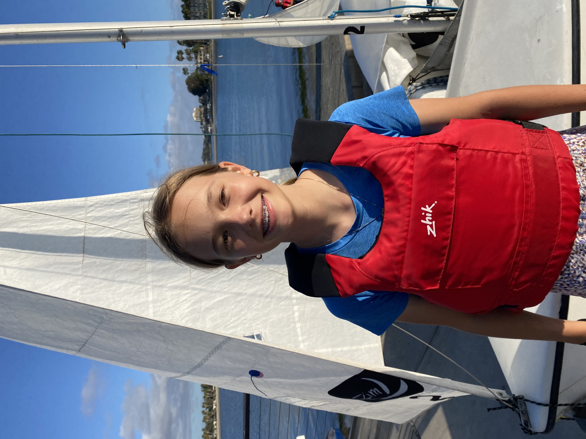
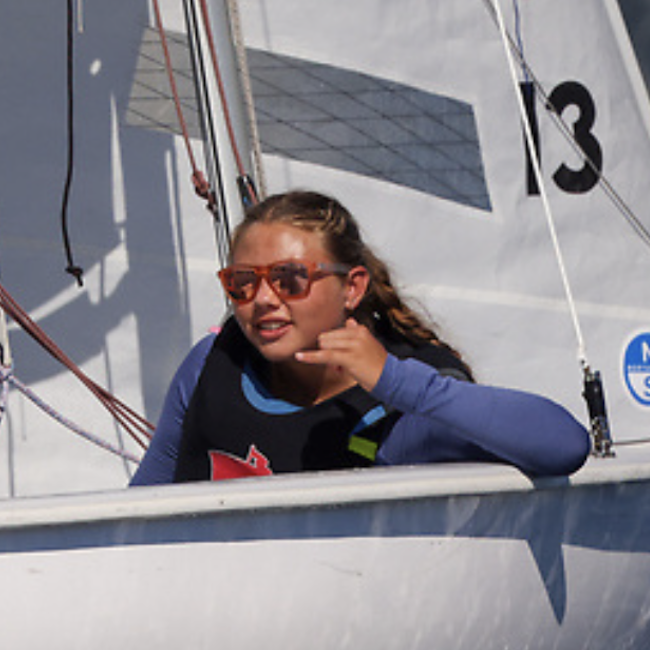
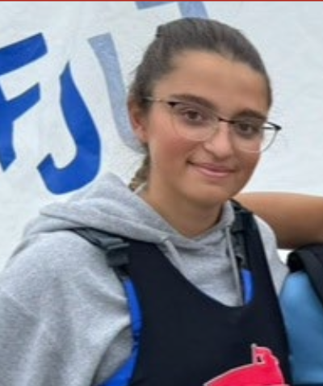
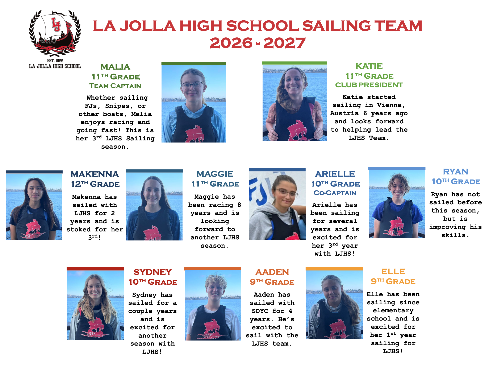
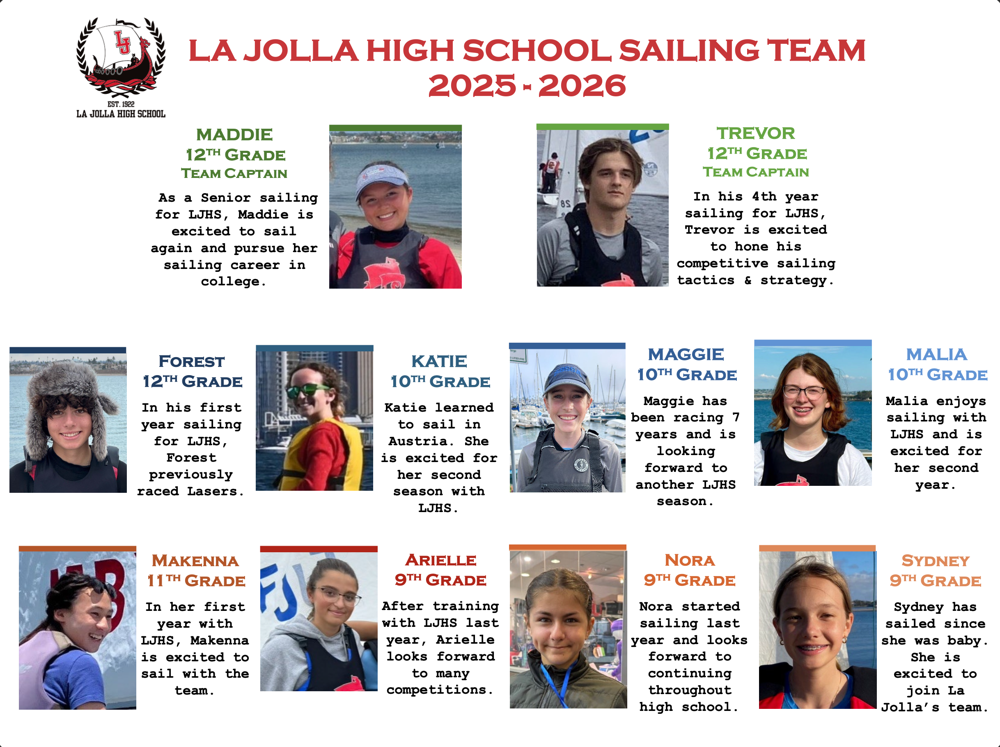
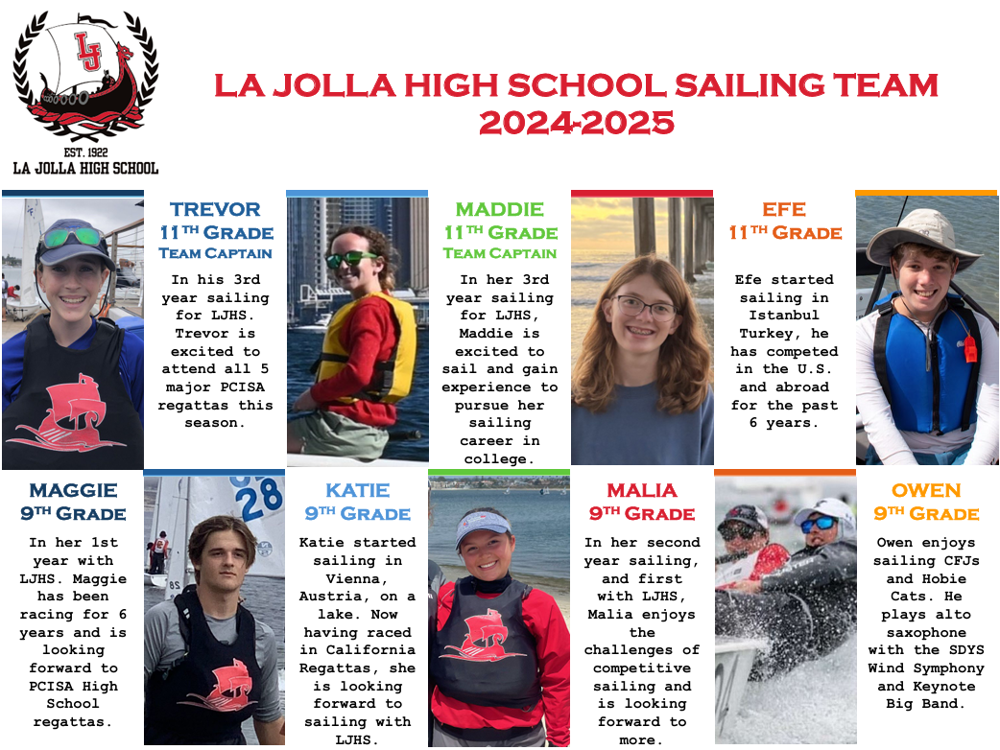

Team Captain
Malia
Whether sailing FJs, Snipes, or other boats, Malia enjoys racing and going fast! Malia is looking to forward to helping lead this team in her third year.

Whether sailing FJs, Snipes, or other boats, Malia enjoys racing and going fast! Malia is looking to forward to helping lead this team in her third year.

She began sailing on a lake in Vienna, Austria. Now, having raced in regattas in California, she is looking forward to sailing with LJHS for her second year.

In her fourth year with LJHS, Maggie has been racing for over eight years.

Makenna has sailed with LJHS for two years and is stoked for her third season.
Ryan has not sailed before this season, but is improving his skills quickly.

In her second year with the team, Sydney has sailed for a couple years and is excited for another season with LJHS!

In her first year sailing for LJHS, Makenna is excited to sail with the team.
Aaden has sailed with SDYC for four years. He’s excited to now sail with a high school team.

Arielle has been sailing for several years and is excited for her third year with LJHS.


